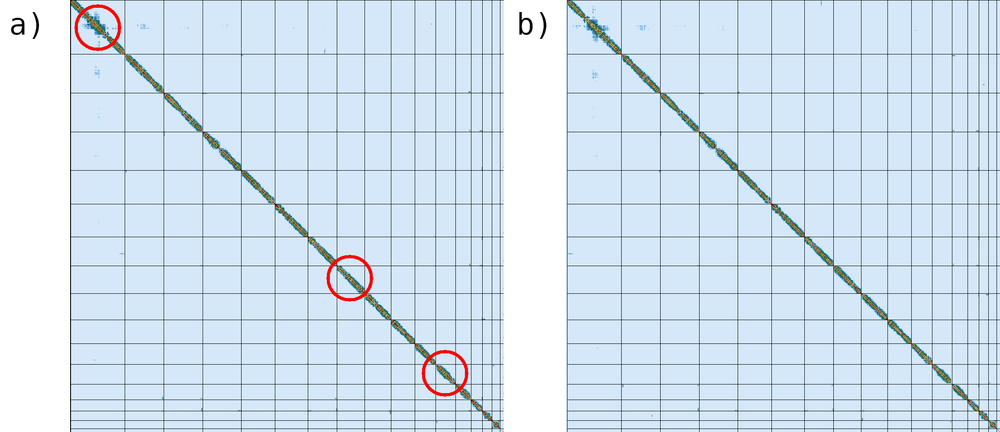

This tutorial is not in its final state. The content may change a lot in the next months.
Because of this status, it is also not listed in the topic pages.
The Vertebrate Genome Project (VGP), emerged from the G10K Consortium, aims to generate high-quality, near error-free, gap-free, chromosome-level, haplotype-phased, annotated reference genome assemblies for every vertebrate species (Rhie et al. 2021). VGP has developed a fully automated de-novo genome assembly pipeline, which uses a combination of three different technologies: Pacbio HiFi, Bionano optical maps and Hi-C chromatine interaction maps.
As a result of the collaboration with the VGP team, a training including a step-by-step detailed description was developed for the Galaxy Training Network (Lariviere et al. 2022). However, due to its complexy, it can be too time consuming for those who are not interested in understanding each of the analysis stages in depth. For this reason, we decided to make available to the community a workflow-centered version of the training.
The GalaxyWorkflow System (GWS) facilitates analysis repeatability, allowing to minimize the number of manual steps required to execute an analysis workflow and automatizing the process of input parameter and software tool version tracking. The objetive of this training is to explain how to run the VGP workflow, focusing on what are the required inputs and which outputs are generated and delegating how the steps re executed to the GWS.
This tutorial assumes you are comfortable getting data into Galaxy, running jobs, managing history, etc. If you are unfamiliar with Galaxy, we recommed you to visit the Galaxy Training Network. Consider starting with the following trainings:
The VGP assembly pipeline has a modular organization, consisting in five main subworkflows (fig. 1), each one integrated by a series of data manipulation steps. Firstly, it allows the evaluation of intermediate steps, which facilitates the modification of parameters if necessary, without the need to start from the initial stage. Secondly, it allows to adapt the workflow to the available data (e.g. not to include the module corresponding to bionano when the data corresponding to this technology is not available).
Figure 1: VGP assembly pipelie. The implemented version of the VGP workflow is modular, consisting in five main independent subworkflows. In addition, it includes some additional workflows (not shown in the figure), required for exporting the results to Genome Ark.
The VGP pipeline integrates two workflows to generate scaffolds from the contig level assemblies generated from the HiFi reads. When Hi-C data and Bionano data are available, the default pipeline will run the Bionano workflow first, followed by the Hi-C workflow. However, it is possible that Bionano data may not be available, in which case the HiC workflow can be used directly on the initial assembly, taking advantage of the modular characteristics of the pipeline.
comment Input option order
This tutorial assumes the input datasets are high-quality. QC on raw read data should be performed before it is used. QC on raw read data is outside the scope of this tutorial.
Get data
The first step is to get the datasets from Zenodo. The VGP assembly pipeline uses data generated by a variety of technologies, including PacBio HiFi reads, Bionano optical maps, and Hi-C chromatin interaction maps.
Copy the tabular data, paste it into the textbox and press Build
dataset_01 https://zenodo.org/record/6098306/files/HiFi_synthetic_50x_01.fasta?download=1 fasta HiFi HiFi_collection
dataset_02 https://zenodo.org/record/6098306/files/HiFi_synthetic_50x_02.fasta?download=1 fasta HiFi HiFi_collection
dataset_03 https://zenodo.org/record/6098306/files/HiFi_synthetic_50x_03.fasta?download=1 fasta HiFi HiFi_collection
From Rules menu select Add / Modify Column Definitions
Click Add Definition button and select List Identifier(s): column A
Click Add Definition button and select URL: column B
Click Add Definition button and select Type: column C
Click Add Definition button and select Group Tag: column D
Click Add Definition button and select Collection Name: column E
Click Apply and press Upload
details Working with your own data
If working on a genome other than the example yeast genome, you upload the VGP data from the VGP/Genome Ark AWS S3 bucket as following:
hands_on Hands-on: Import data from Genome Ark
Open the file galaxy-uploadupload menu
Click on Choose remote files tab
Click in the Genome Ark buttom and then click in species
You can find the VGP data following this path: /species/${Genus}_${species}/${speciman_code}/genomic_data. Inside a given datatype directory (e.g. pacbio), select all the relevant files individually until all the desired files are highlighted and click the Ok buttom. Note that there may be multiple pages of files listed. Also note that you may not want every file listed.
Tip: Creating a dataset collection
Click on Operations on multiple datasets (check box icon) at the top of the history panel
Check all the datasets in your history you would like to include
Click For all selected.. and choose Build dataset list
Enter a name for your collection
Click Create List to build your collection
Click on the checkmark icon at the top of your history again
Import workflows from WorkflowHub
Once we have imported the datasets, the next step is to import the VGP workflows from the Workflowhub server. WorkflowHub is a workflow management system which allows workflows to be FAIR, citable, have managed metadata profiles, and be openly available for review and analytics.
hands_on Hands-on: Import a workflow
Click in the Workflow menu, located in the top bar.
Click in the Import buttom, located in the right corner.
In the section Import a Workflow from Configured GA4GH Tool Registry Servers (e.g. Dockstore), click in Search form.
In the TRS Server: workflowhub.eu menu you should type name:vgp
Click in the desired workflow, and finally select the last available version.
After that, the imported workflows will appear in the main workflow menu. In order to initialize the workflow, we just need to click in the workflow-runRun workflow icon, marked with a red square in the figure 2.
Figure 2:Workflow main menu. The workflow menu lists all the workflows that have been imported. It provides useful information for organizing the workflows, such as last update and the tags. The worklows can be run by clicking in the play icon, marked in red in the image.
Once we have imported the datasets and the workflows, we can start with the genome assembly.
commentWorkflow-centric Research Objects
In WorkfloHub, workflows are packaged, registered, downloaded and exchanged as Research Objects using the RO-Crate specification, with test and example data, managed metadata profiles, citations and more.
Genome profile analsysis
Now that our data and workflows are imported, we can run our first workflow. Before the assembly can be run, we need to collect metrics on the properties of the genome under consideration, such as the expected genome size. The present pipeline uses Meryl for generating the k-mer database and Genomescope for determing the genome size based on a k-mer analysis.
Click in the Workflow menu, located in the top bar
Click in the workflow-runRun workflow buttom corresponding to VGP genome profile analysis
In the Workflow: VGP genome profile analysis menu:
param-collection “Collection of Pacbio Data”: 7: HiFi_collection
“K-mer length”: 32
“Ploidy”: 2
Click in the Run workflow buttom
Once the workflow have finished, we can evaluate the linear plot generated by Genomescope (fig. 3), which includes valuable information such as k-mer profiles, fitted models and estimated parameters. This file corresponds to the dataset 26.
Figure 3: GenomeScope2 21-mer profile. The first peak located at coverage 21x corresponds to the heterozygous peak. The second peak at coverage 50x, corresponds to the homozygous peak. Estimate of the heterozygous portion is 0.637%. The plot also includes informatin about the the inferred total genome length (len), genome unique length percent (uniq), overall heterozygosity rate (het), mean k-mer coverage for heterozygous bases (kcov), read error rate (err), average rate of read duplications (dup) and k-mer size (k).
This distribution is the result of the Poisson process underlying the generation of sequencing reads. As we can see, the k-mer profile follows a bimodal distribution, indicative of a diploid genome. The distribution is consistent with the theoretical diploid model (model fit > 93%). Low frequency k-mers are the result of sequencing errors. GenomeScope2 estimated a haploid genome size is around 11.7 Mb, a value reasonably close to Saccharomyces genome size. Additionally, it revealed that the variation across the genomic sequences is 0.69%.
HiFi phased assembly with hifiasm
After the genome profiling, the next step is to run the VGP HiFi phased assembly with hifiasm and HiC data workflow. This workflow uses hifiasm to generate initial primary and alternate pseudohaplotype assemblies. In addition, this workflow includes three tools for evaluating the assembly completeness: QUAST, BUSCO and Merqury.
hands_on Hands-on: VGP HiFi phased assembly with hifiasm and HiC data workflow
Click in the Workflow menu, located in the top bar
Click in the workflow-runRun workflow buttom corresponding to VGP HiFi phased assembly with hifiasm and HiC data
In the Workflow: VGP HiFi phased assembly with hifiasm and HiC data menu:
param-file “Genomescope summary dataset”: 19: Genomescope on data 13 Summary
“K-mer length”: 32
“Ploidy”: 2
“Is genome large (>100Mb)?”: No
Click in the Run workflow buttom
comment Input option order
Note that the order of the input may differ slightly.
Let’s have a look at the HTML report generated by QUAST (fig. 4), which corresponds with the dataset 52. It summarizes the main statistics related with the assembly completeness.
Figure 4: QUAST report. Statistics of the primary and alternate assembly (a). Cumulative length plot (b).
According to the report, both assemblies are quite similar; the primary assembly includes 33 contigs, whose cumulative length is around 23.5Mbp. On the other hand, the second alternate assembly includes 35 contigs, whose total lenght is 25.5Mbp. As we can see in the figure 4a, the assemblies are much larger than the estimated genome sizes (dotted line), which means that both include duplicated sequences.
question Questions
What is the longest contig in the primary assembly? And in the alternate one?
What is the N50 of the primary assembly?
Which percentage of reads mapped to each assembly?
solution Solution
The longest contig in the primary assembly is 1.532.843 bp, and 1.532.843 bp in the alternate assembly.
The N50 of the primary assembly is 922.430 bp.
According to the report, 100% of reads mapped to both the primary assembly and the alternate assembly.
Next, we are going to evaluate the outputs generated by BUSCO. This tool provides quantitative assessment of the completeness of a genome assembly in terms of expected gene content. It relies on the analysis of genes that should be present only once in a complete assembly or gene set, while allowing for rare gene duplications or losses (Simão et al. 2015).
Figure 5: BUSCO full table. It contains the complete results in a tabular format with scores and lengths of BUSCO matches, and coordinates.
As we can see in the report, the results are simplified into four categories: complete and single-copy, complete and duplicated, fragmented and Missing BUSCOs.
question Questions
How many complete BUSCO genes have been identified in the primary assembly?
How many BUSCOs genes are absent?
solution Solution
According to the report, our assembly contains the complete sequence of 2080 complete BUSCO genes (97.3%).
19 BUSCO genes are missing.
Despite BUSCO being robust for species that have been widely studied, it can be inaccurate when the newly assembled genome belongs to a taxonomic group that is not well represented in OrthoDB. Merqury provides a complementary approach for assessing genome assembly quality metrics in a reference-free manner via k-mer copy number analysis.
hands_on Hands-on: k-mer based evaluation with Merqury
MerquryTool: toolshed.g2.bx.psu.edu/repos/iuc/merqury/merqury/1.3 with the following parameters:
param-file“First genome assembly”: Primary contigs FASTA
param-file“Second genome assembly”: Alternate contigs FASTA
By default, Merqury generates three collections as output: stats, plots and QV stats. The “stats” collection contains the completeness statistics, while the “QV stats” collection contains the quality value statistics. Let’s have a look at the compy number (CN) spectrum plot, known as the spectra-cn plot (fig. 6).
Figure 6: Merqury CN plot corresponding to the primary assembly. This plot tracks the multiplicity of each k-mer found in the Hi-Fi read set and colors it by the number of times it is found in a given assembly. Merqury connects the midpoint of each histogram bin with a line, giving the illusion of a smooth curve.
As suggested previously by the report generated by QUAST (fig. 5), the assemblies contain a large proportion of duplicated reads. The red area represents one-copy k-mers in the genome, while the blue area represents two-copy k-mers, originating from haplotype-specific duplications. From that figure we can state that the sequencing coverage is around 50x.
Post-assembly processing
An ideal haploid representation would consist of one allelic copy of all heterozygous regions in the two haplomes, as well as all hemizygous regions from both haplomes (Guan et al. 2019). However, in highly heterozygous genomes, assembly algorithms are frequently not able to identify the highly divergent allelic sequences as belonging to the same region, resulting in the assembly of those regions as separate contigs. In order to prevent potential issues in downstream analysis, we are going to run the VGP purge assembly with purge_dups workflow, which will allow to identify and reassign allelic contigs.
hands_on Hands-on: VGP purge assembly with purge_dups pipeline workflow
Click in the Workflow menu, located in the top bar
Click in the workflow-runRun workflow buttom corresponding to VGP purge assembly with purge_dups pipeline
In the Workflow: VGP purge assembly with purge_dups pipeline menu:
param-file “Hifiasm Primary assembly”: 39: Hifiasm HiC hap1
param-file “Hifiasm Alternate assembly”: 40: Hifiasm HiC hap2
param-file “Genomescope model parameters”: 20: Genomescope on data 13 Model parameters
Click in the Run workflow buttom
This workflow generates a large number of outputs, among which we should highlight the datasets 74 and 91, which correspond to the purged primary and alternative assemblies respectively.
Hybrid scaffolding with Bionano optical maps
Once the assemblies generated by hifiasm has been purged, the next step is to run the VGP hybrid scaffolding with Bionano optical maps workflow. It will allow to integrate the information provided by optical maps with primary assembly sequences in order to detect and correct structural variants, such as chimeric joins and misoriented contigs. In addition, this workflow includes some additonal steps from evaluating the outputs.
hands_on Hands-on: VGP hybrid scaffolding with Bionano optical maps workflow
Click in the Workflow menu, located in the top bar
Click in the workflow-runRun workflow buttom corresponding to VGP hybrid scaffolding with Bionano optical maps
In the Workflow: VGP hybrid scaffolding with Bionano optical maps menu:
Once the workfow have finished, let’s have a look at the assembly reports.
As we can observe in the cumulative plot of the file 119 (fig. 7a), the total length of the assembly (12.160.926 bp) is slightly larger than the expected genome size. With respect to the NG50 statistic (fig. 10b), the value is 922.430 bp, which is significantly higher than the value obtained during the first evaluation stage (813.039 bp).
Figure 7: . Cumulative length plot (a). NGx plot. The y-axis represents the NGx values in Mbp, and the x-axis is the percentage of the genome (b). Assembly evaluation after runnig Bionano. BUSCO genes are defined as "Complete (C) and single copy (S)" when are found once in the single-copy ortholog database, "Complete (C) and duplicated (D)" when single-copy ortholog genes which were found more than once, "Fragmented (F)" when genes are matching just partially to a single-copy ortholog DB, and "Missing (M)" when genes which are expected but were not detected (c).
It is also recommended to examine BUSCO outputs. In the summary image (fig. 7c), which can be found in the daset 117, we can appreciate that most of the universal single-copy orthologs are present in our assembly.
question Questions
How many scaffolds are in the primary assembly after the hybrid scaffolding?
What is the size of the largest scaffold? Has improved with respect to the previous evaluation?
What is the percertage of completeness on the core set genes in BUSCO? Has increased the completeness?
solution Solution
The number of contigs is 17.
The largest contig is 1.531.728 bp long. This value hasn’t changed.
The percentage of complete BUSCOs is 95.7%. Yes, it has increased, since in the previous evaluation the completeness percentage was 88.7%.
Hybrid scaffolding with Hi-C data
In this final stage, we will run the VGP hybrid scaffolding with HiC data, which exploit the fact that the contact frequency between a pair of loci strongly correlates with the one-dimensional distance between them with the objective of linking the Bionano scaffolds to a chromosome scale by using SALSA2.
hands_on Hands-on: VGP hybrid scaffolding with HiC data
Click in the Workflow menu, located in the top bar
Click in the workflow-runRun workflow buttom corresponding to VGP hybrid scaffolding with HiC data
In the Workflow: VGP hybrid scaffolding with HiC data menu:
param-file “Scaffolded Assembly”: 114: Concatenate datasets on data 110 and data 109
In order to evaluate the Hi-C hybrid scaffolding, we are going to compare the contact maps before and after running the HiC hybrid scaffolding workflow (fig. 8), corresponding to the datasets 130 and 141 respectively.
Figure 8: Hi-C map generated by Pretext after the hybrid scaffolding based on Hi-C data. The red circles indicate the differences between the contact map generated after (a) and before (b) Hi-C hybrid scaffolding.
Among the most notable differences that can be identified between the contact maps, it can be highlighted the regions marked with red circles, where inversion can be identified.
Figure 9: Comparison between the final assembly generating in this training and the reference genome. Contiguity plot using the reference genome size (a). Assemby statistics (b).
With respect to the total sequence length, we can conclude that the size of our genome assembly is almost identical to the reference genome (fig.16a,b). It is conspicuous that the reference genome consists of 17 sequences, while in our assembly includes only 16 chromosomes. This is due to the fact that the reference genome also includes the sequence of the mitochondrial DNA, which consists of 85,779 bp. The remaining statistics exhibit very similar values (fig. 16b).
Figure 10: Comparison bwetween contact maps generated by using the final assembly (a) and the reference genome (b).
If we compare the contact map of our assembled genome (fig. 17a) with the reference assembly (fig. 17b), we can see that the two are essentially identical. This means that we have achieved an almost perfect assembly at the chromosome level.
References
Simão, F. A., R. M. Waterhouse, P. Ioannidis, E. V. Kriventseva, and E. M. Zdobnov, 2015 BUSCO: assessing genome assembly and annotation completeness with single-copy orthologs. Bioinformatics 31: 3210–3212. 10.1093/bioinformatics/btv351
Guan, D., S. A. McCarthy, J. Wood, K. Howe, Y. Wang et al., 2019 Identifying and removing haplotypic duplication in primary genome assemblies. 10.1101/729962
Rhie, A., S. A. McCarthy, O. Fedrigo, J. Damas, G. Formenti et al., 2021 Towards complete and error-free genome assemblies of all vertebrate species. Nature 592: 737–746. 10.1038/s41586-021-03451-0
The VGP pipeline allows to generate error-free, near gapless reference-quality genome assemblies
The assembly can be divided in four main stages: genome profile analysis, HiFi long read phased assembly with hifiasm, Bionano hybrid scaffolding and Hi-C hybrid scaffolding
Simão, F. A., R. M. Waterhouse, P. Ioannidis, E. V. Kriventseva, and E. M. Zdobnov, 2015 BUSCO: assessing genome assembly and annotation completeness with single-copy orthologs. Bioinformatics 31: 3210–3212. 10.1093/bioinformatics/btv351
Guan, D., S. A. McCarthy, J. Wood, K. Howe, Y. Wang et al., 2019 Identifying and removing haplotypic duplication in primary genome assemblies. 10.1101/729962
Rhie, A., S. A. McCarthy, O. Fedrigo, J. Damas, G. Formenti et al., 2021 Towards complete and error-free genome assemblies of all vertebrate species. Nature 592: 737–746. 10.1038/s41586-021-03451-0
Did you use this material as an instructor? Feel free to give us feedback on how it went.
Did you use this material as a learner or student? Click the form below to leave feedback.
Batut et al., 2018 Community-Driven Data Analysis Training for Biology Cell Systems 10.1016/j.cels.2018.05.012
details BibTeX
@misc{assembly-vgp_workflow_training,
author = "Delphine Lariviere and Alex Ostrovsky and Cristóbal Gallardo and Brandon Pickett",
title = "VGP assembly pipeline - short version (Galaxy Training Materials)",
year = "2022",
month = "04",
day = "06"
url = "\url{https://training.galaxyproject.org/training-material/topics/assembly/tutorials/vgp_workflow_training/tutorial.html}",
note = "[Online; accessed TODAY]"
}
@article{Batut_2018,
doi = {10.1016/j.cels.2018.05.012},
url = {https://doi.org/10.1016%2Fj.cels.2018.05.012},
year = 2018,
month = {jun},
publisher = {Elsevier {BV}},
volume = {6},
number = {6},
pages = {752--758.e1},
author = {B{\'{e}}r{\'{e}}nice Batut and Saskia Hiltemann and Andrea Bagnacani and Dannon Baker and Vivek Bhardwaj and Clemens Blank and Anthony Bretaudeau and Loraine Brillet-Gu{\'{e}}guen and Martin {\v{C}}ech and John Chilton and Dave Clements and Olivia Doppelt-Azeroual and Anika Erxleben and Mallory Ann Freeberg and Simon Gladman and Youri Hoogstrate and Hans-Rudolf Hotz and Torsten Houwaart and Pratik Jagtap and Delphine Larivi{\`{e}}re and Gildas Le Corguill{\'{e}} and Thomas Manke and Fabien Mareuil and Fidel Ram{\'{\i}}rez and Devon Ryan and Florian Christoph Sigloch and Nicola Soranzo and Joachim Wolff and Pavankumar Videm and Markus Wolfien and Aisanjiang Wubuli and Dilmurat Yusuf and James Taylor and Rolf Backofen and Anton Nekrutenko and Björn Grüning},
title = {Community-Driven Data Analysis Training for Biology},
journal = {Cell Systems}
}
Congratulations on successfully completing this tutorial!
 Delphine Lariviere
Delphine Lariviere
 Alex Ostrovsky
Alex Ostrovsky
 Cristóbal Gallardo
Cristóbal Gallardo
 Brandon Pickett
hall-of-fameAdd Contributions!
Brandon Pickett
hall-of-fameAdd Contributions!
 Questions:
Questions: